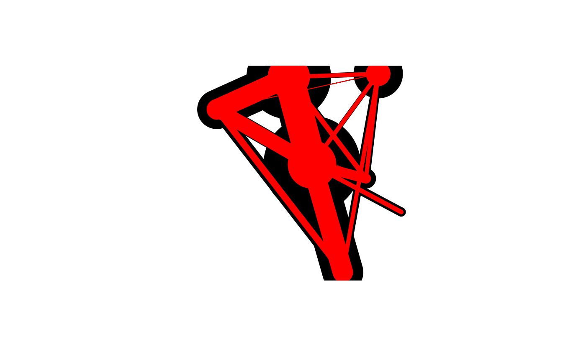

Aggregate flows so they become non-directional (by geometry - the slow way)
Source:R/overline.R
onewaygeo.RdFlow data often contains movement in two directions: from point A to point B
and then from B to A. This can be problematic for transport planning, because
the magnitude of flow along a route can be masked by flows the other direction.
If only the largest flow in either direction is captured in an analysis, for
example, the true extent of travel will by heavily under-estimated for
OD pairs which have similar amounts of travel in both directions.
Flows in both direction are often represented by overlapping lines with
identical geometries (see flowlines()) which can be confusing
for users and are difficult to plot.
onewaygeo(x, attrib)
Arguments
| x | A dataset containing linestring geometries |
|---|---|
| attrib | A text string containing the name of the line's attribute to aggregate or a numeric vector of the columns to be aggregated |
Value
onewaygeo outputs a SpatialLinesDataFrame with single lines
and user-selected attribute values that have been aggregated. Only lines
with a distance (i.e. not intra-zone flows) are included
Details
This function aggregates directional flows into non-directional flows, potentially halving the number of lines objects and reducing the number of overlapping lines to zero.
See also
Other lines:
angle_diff(),
geo_toptail(),
is_linepoint(),
line2df(),
line2points(),
line_bearing(),
line_breakup(),
line_match(),
line_midpoint(),
line_sample(),
line_segment(),
line_via(),
mats2line(),
n_sample_length(),
n_vertices(),
points2line(),
toptail_buff(),
toptailgs(),
update_line_geometry()
Examples
singlines <- onewaygeo(flowlines[1:30, ], attrib = which(names(flowlines) == "On.foot")) plot(singlines, lwd = singlines$On.foot / 2, col = "red", add = TRUE)if (FALSE) { plot(flowlines, lwd = flowlines$All / 10) singlelines <- onewaygeo(flowlines, attrib = 3:14) plot(singlelines, lwd = singlelines$All / 20, col = "red", add = TRUE) sum(singlelines$All) == sum(flowlines$All) nrow(singlelines) singlelines_sf <- onewaygeo(flowlines_sf, attrib = 3:14) sum(singlelines_sf$All) == sum(flowlines_sf$All) summary(singlelines$All == singlelines_sf$All) }